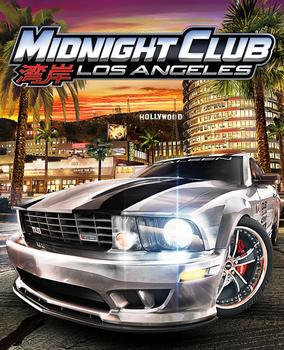

Mario Party

A picture of the game Mario Party 8 (Source: nintendo.co)
The first ever game I played was Mario Party on the Wii. I remember the first day it was introduced to me, like yesterday. It was my cousin's 18th birthday, and we all visited her house. When I got there, I saw all my cousins bring their Wii remote from home, and they were all ready to play something. I was curious how they would play with many controllers, but then I saw the game. Nintendo created the well-known video game franchise known as Mario Party. Characters from the Super Mario series appear in this multiplayer party game. The game consists of several interactive board game-style levels where players move their characters around the board to gather coins and stars while rolling dice.Players engage in mini-games throughout the game that challenge their abilities and present chances to win coins or advance. These mini-games span various genres, including racing, sports, puzzles, and strategy games. The primary goal of Mario Party is to gather stars, which may be done by spending coins on the game board. After the game, the player with the most stars is crowned the winner. This type of game was my first because it taught me everything about gaming. The biggest lesson I learned would be to be a couple of moves ahead of everyone else. Overall, it was a great first game for me to experience.
Midnight Club

A picture of the game Midnight Club (Source: wikipedia.com)
I love cars with all my heart. My first word as a baby was a car, so that is how you know that cars are a massive part of my life. The first car game I ever played was Midnight Club. Rockstar Games created the Midnight Club series of racing video games. The series is well-known for its open-world racing gameplay, which allows players to frolic through a sizable, open metropolis and participate in various street racing competitions. In the Midnight Club games, players can usually choose from customizable automobiles, motorcycles, and other vehicles to utilize in online multiplayer mode to compete in races and challenges against AI opponents or other users. The gameplay emphasizes illicit street racing in a made-up metropolis, where players can freely explore, find shortcuts, and participate in fast races through congested streets. By upgrading and customizing their vehicles, gamers may make them quicker and more competitive as they advance through the game. This game showed me my passion for cars and how, in the future, I would make this my lifestyle. This game was the best car game of all time. I would say this game made a huge impact on why cars is such a huge passion for me today.
CS:GO

A picture of the game CS:GO (Source: steampowered.com)
My favourite game of all time has to be CS: GO. "Counter-Strike: Global Offensive," also known as CS: GO, is a well-known first-person shooter (FPS) computer game created by Valve Corporation and Hidden Path Entertainment. It comes after Counter-Strike, Counter-Strike: Condition Zero, and Counter-Strike: Source as the fourth game in the Counter-Strike series. The Counter-Terrorists and the Terrorists are the two teams in the multiplayer game CS: GO. Each round of the objective-based gameplay has a distinct goal for each group. The terrorists want to detonate a bomb at a specific location or prevent counterterrorism agents from doing so. The Counter-Terrorists, on the other hand, must either stop the bomb from being planted or defuse it if it has already been. The game's tactical gameplay is well-known for needing cooperation, communication, and strategic thinking to succeed. This game has been so much fun to play with friends. I loved this game so much that I played it every day. Consistently playing this game for a long time made me get good at the game. This caused me to get to a professional level by playing on semi-pro teams earning money from different tournaments we played in. Therefore, not only did I find the game entertaining, but I made a career out of it as well.